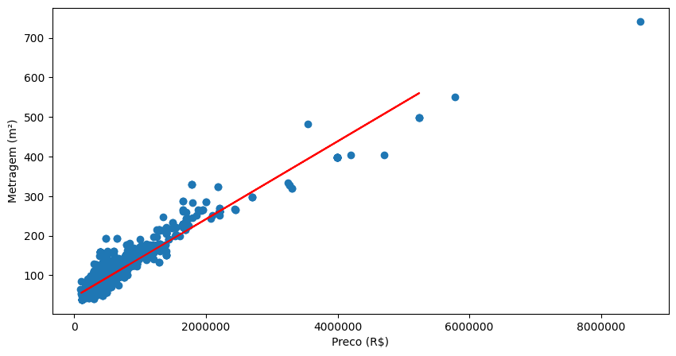
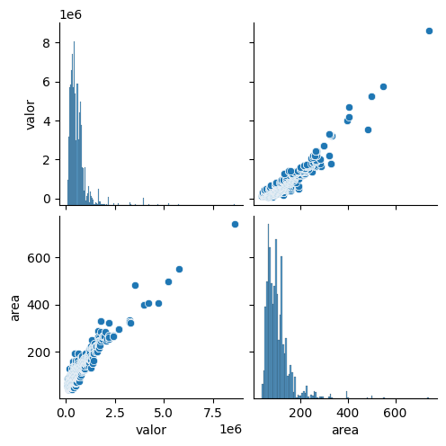

MODELO DE PRECIFICAÇÃO DE IMÓVEIS
UTILIZANDO MACHINE LEARNING
Desenvolvido por
João Guilherme Faria
V
INFORMAÇÕES GERAIS
Essa página tem por objetivo apresentar o modelo desenvolvido com fins
educacionais e de pesquisa. A base de dados utilizada é de 2021 foi
criada por William Carlos e pode ser acessada por esse
link
. O modelo prevê valores e metragens de apartamentos a partir de R$
50.000 ou 45m² na cidade de Goiânia. Foi obtido um Coeficiente de
Determinação de 0.91 (Explica 91% da variação dos dados), um resultado
considerado excelente, e um erro de aproximadamente 15% em relação à
média, valor considerado razoável.

O modelo ajusta uma reta de regressão linear que descreve a relação
entre o preço e a área dos apartamentos, permitindo realizar
previsões.
O gráfico em pares exibe a distribuição individual de cada variável na
diagonal e a relação entre elas fora da diagonal, permitindo
identificar visualmente que existe uma correlação positiva entre o
preço e a área dos apartamentos.

MODELO DE PREVISÃO DE PREÇO
( Mínimo 50.000R$ )
MODELO DE PREVISÃO DE M²
( Mínimo 45m² )